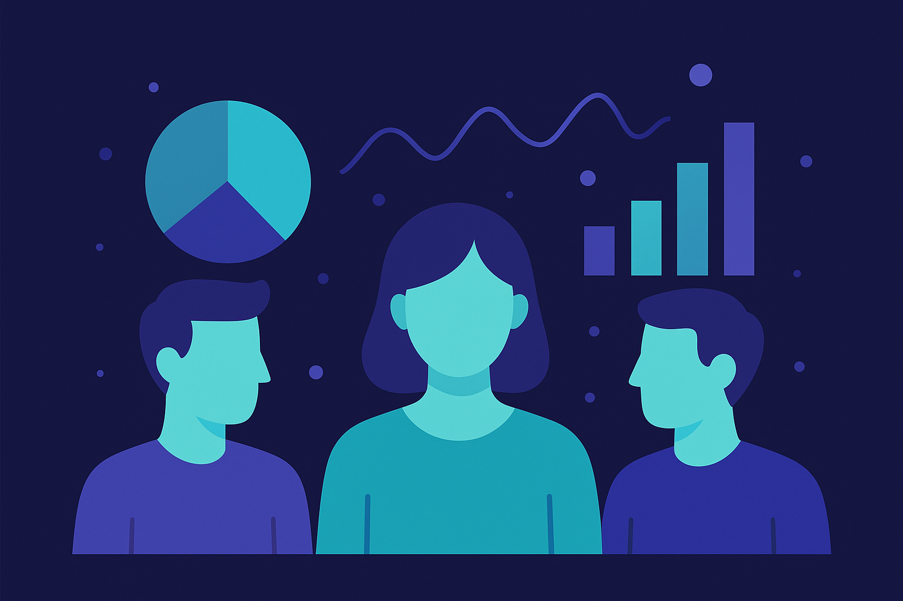

// Selected Work
End-to-end analytics projects — from data generation and cleaning to analysis and stakeholder-ready visuals. Every dataset holds a unique story.
HR Analytics · People Analytics
Problem: Identify key drivers of attrition and training outcomes using workforce data.
Approach: Generated a synthetic HR dataset (~5,000 employees), defined KPIs (attrition, attendance, training completion, performance), and analysed trends and risk patterns. Built a baseline attrition-risk model and visual summaries for reporting.
Output: KPI views, charts, and an HR insights report supporting workforce planning and retention analysis. Training completion rates improved by 12%.

Revenue Analysis · Dashboarding
Problem: Understand revenue leakage and performance drivers across regions and product SKUs.
Approach: Analysed ~10,000 transactions across four regions to identify discounting patterns, low-margin SKUs, and seasonality. Designed KPI views and a dashboard for quick performance monitoring.
Output: An interactive dashboard and insights highlighting where margin and revenue improvements are most likely — projecting a 10% revenue improvement opportunity.
Operations Analytics · Process Optimisation
Problem: Improve operational execution and engagement outcomes for recurring campus events.
Approach: Analysed attendance and feedback data to identify engagement bottlenecks, capacity constraints, and process gaps. Tracked utilisation and satisfaction trends and compared before/after changes to evaluate improvements.
Output: An operational KPI report with recommendations to improve throughput, planning, and participation outcomes.
// Let's Talk
If you'd like to discuss any of these projects or explore working together — I'd love to hear from you.